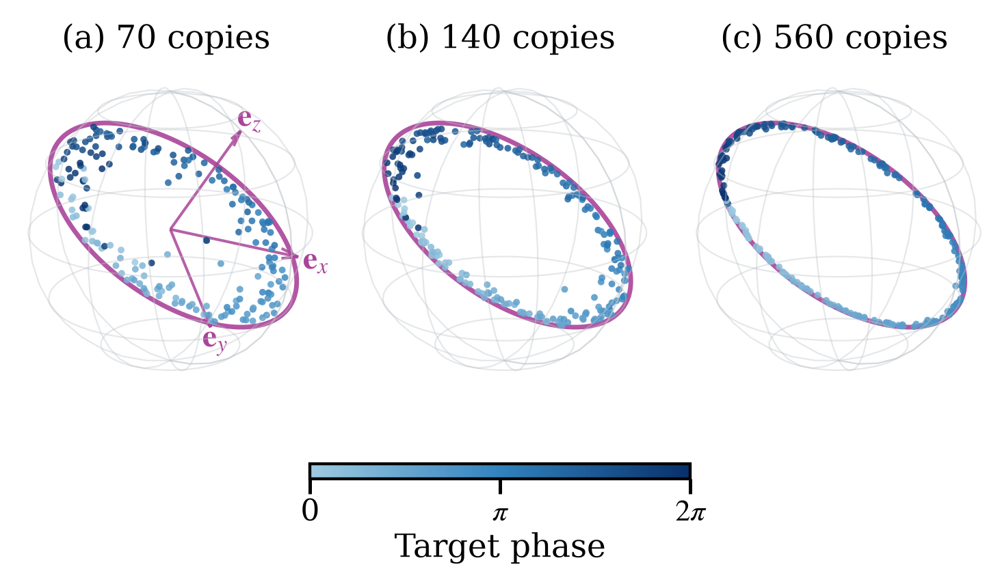
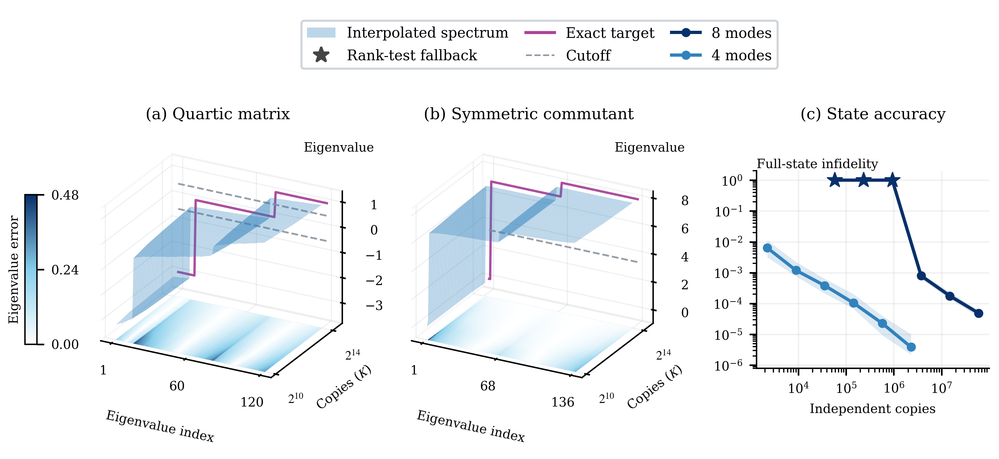

Supporting algebraic and statistical lemmas behind the fermionic state-learning guarantees are formalized in Lean in the accompanying code.
Abstract
We prove copy-optimal learning of the full Gaussian orbit of paired magic states on $n$ fermionic modes. The unknown evolution may be any parity-preserving quadratic circuit, including pair creation and annihilation, and each copy is measured once, in a fixed basis, on a single quartic Majorana observable. A nonadaptive learner returns a Gaussian preparation within trace distance $ε$ from $Θ(n^6/ε^2)$ copies at fixed confidence, and no learner in this measurement model, adaptive or not, can do better. Measured quartic correlations certify the trace distance of the result. Our second result extends learning to a broader family: pure states whose unknown input blocks are superpositions of disjoint occupation patterns with bounded particle number, under the same evolution. Using single-copy Gaussian rotations and occupation readout, a batch-adaptive learner returns an input and a Gaussian circuit with infidelity $f$ from $\widetilde O(n^7/f)$ copies and polynomial classical processing. Connected quartic correlations reveal the hidden mode groups, and fresh local measurements restore the branches and their coherences. No particle-number conservation, minimum branch weight or spectral gap is assumed.
Problem
Learning an unknown fermionic pure state of n modes generally needs exponentially many parameters. The target class is states made of bounded-particle non-Gaussian input blocks hidden by an unknown parity-preserving quadratic (Gaussian) circuit, including pair creation and annihilation.
Approach
Learners use single-copy Gaussian rotations with occupation readout, or fixed-basis quartic Majorana measurements. Connected quartic correlations and their joint commutant with the covariance reveal the hidden mode groups. Fresh local measurements then reconstruct the branches and their coherences. Supporting algebraic and statistical lemmas are formalized in Lean.
Results
For the Gaussian orbit of paired magic states, a nonadaptive learner reaches trace distance ε from Θ(n^6/ε^2) copies, which is optimal in this measurement model. For general disjoint-branch inputs, polynomial copy and runtime bounds are proved with no assumed minimum branch weight or spectral gap. Small numerical examples with one or two dimers illustrate the reconstruction.

Figure 2: Quartic reconstruction of singlet-phase states. Magenta marks the target circle; blue points are independent reconstructions, colored by target phase. Panel (a) marks the orthonormal directions \mathbf{e}_{x},\mathbf{e}_{y},\mathbf{e}_{z} of the logical Pauli coordinates. The projection retains leakage; Appendix D gives its geometry, setting and full-state errors.

Figure 3: Measured structure and full-state reconstruction. (a,b) Transparent surfaces interpolate eight-mode quartic and commutant spectra at four measured budgets, with K copies per quartic observable. Magenta gives the exact spectra; gray dashes mark decoder cutoffs on the same back plane. Base-plane colors interpolate absolute eigenvalue errors, from white (zero) to dark blue on a shared scale